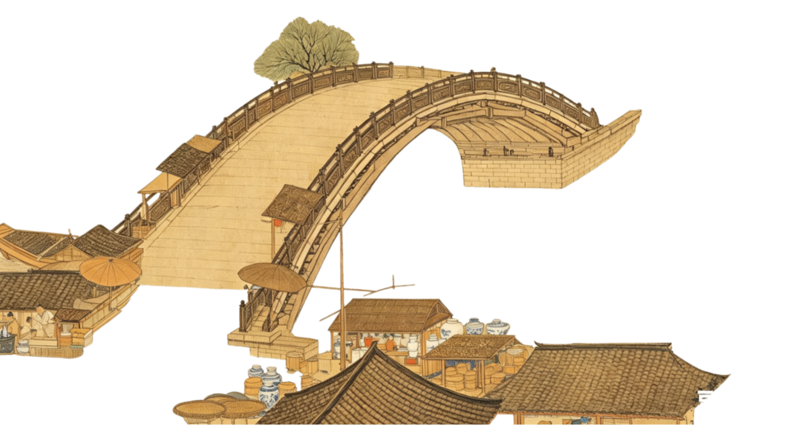
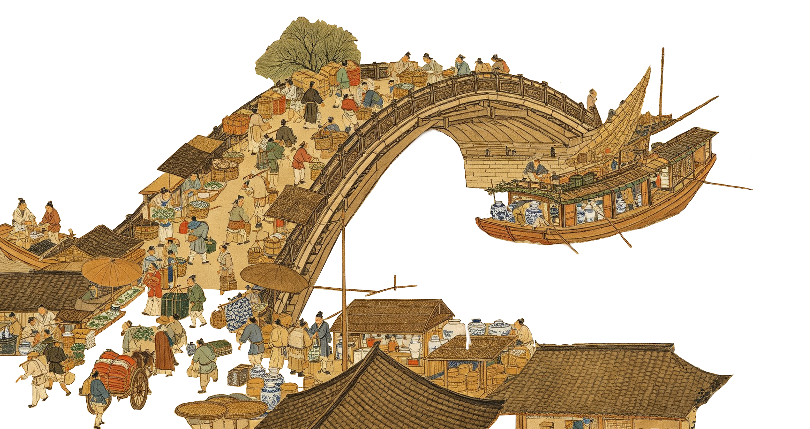
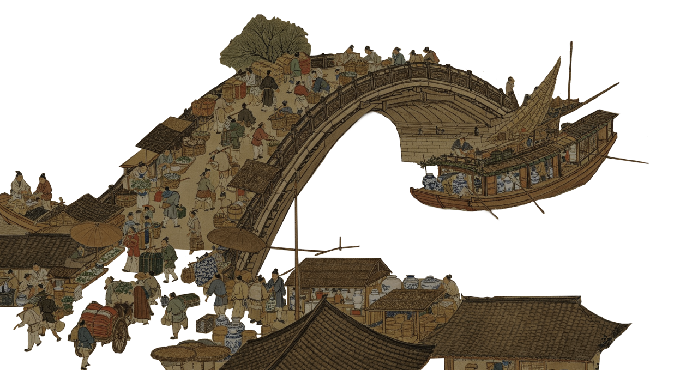
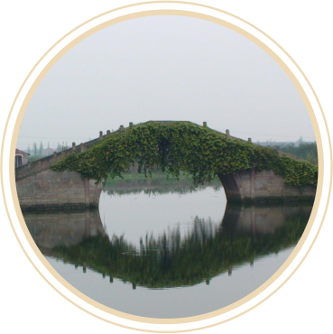
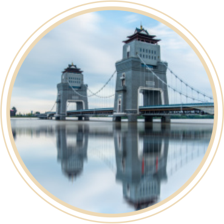
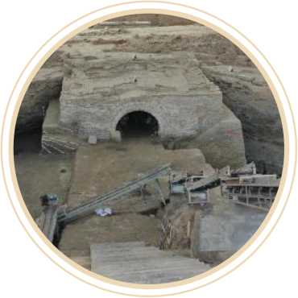

一座桥，往往能兴盛一座镇。江河因桥而通途，商旅因桥而汇聚，桥市因商而繁荣。南来北往的货物在此中转，四方百姓与客商在此交易，日复一日，桥边从零星摊位变成热闹集市，从简易渡口发展成商铺林立、市井繁华的集镇。
桥梁、渡口作为水陆交通的汇聚点，是“舟车所聚，四方商贾孔道”之地，因交通便利而在桥上、桥头或桥梁、渡口附近区域产生商业交易行为，乃顺理成章之事。随着交易时间、空间的相对规律，在桥梁的附近区域会形成一个固定的贸易场所，这就是“桥市”。
茶叶主产于我国南方丘陵与温润地区，是古代最重要的民生商品之一。在运输过程中，茶叶多依靠水路经桥梁、渡口转运北上，逐步进入北方市场与游牧地区。茶叶不仅改变了北方民众的饮食结构与生活习惯，更衍生出丰富的茶文化、茶礼仪，成为跨地域文化交流的重要符号。
丝绸工艺精湛、质地华美，在世界商贸史上占据极高地位。丝绸通过内陆商路、水路渡口与陆上丝绸之路流通，远销西域与欧洲各国，成为东西方文化交流的标志性物产。
盐与铁则是古代国家经济的命脉物资，二者通过固定商路与渡口转运全国，不仅支撑着国家财政收入，更深刻影响着国家经济稳定与天下百姓的日常生活。
瓷器以细腻质地、精美纹饰与实用功能著称，是古代海外贸易与国内流通的核心商品，经由水路商路远销海内外，成为“中国”的文化象征。



古代商业繁荣多依傍水陆枢纽。云开雾散间，透过这四座传世名桥，仿佛能窥见千年前商贾云集、市井喧嚣的繁华岁月。
灞桥位于长安城东，为关东出入京师要道。桥侧形成以车马停歇、食宿、货物中转为主的桥市，服务官民行旅与物资转运，是长安外围重要交通型桥市。
扬州为唐代东南大都会，城内桥梁密集，万岁桥等桥头多形成桥市。以水路商贸为依托，夜市、晓市兴盛，是江南都城型桥市的典型代表。
汴州扼漕运咽喉，汴河上诸桥附近均形成桥市。以漕运物资、南北杂货交易为主，商业繁盛，为北宋东京桥市全面繁荣奠定了基础。
天津桥横跨洛水，连接隋唐洛阳城南北。桥头商贾云集，店铺林立，不仅有中原百货，更有西域胡商在此交易，是国际化都城水陆交通与商业中心。